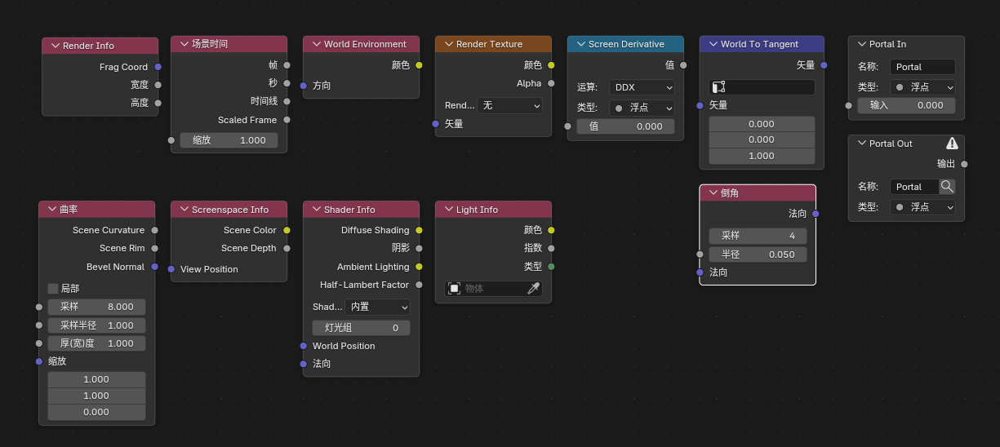
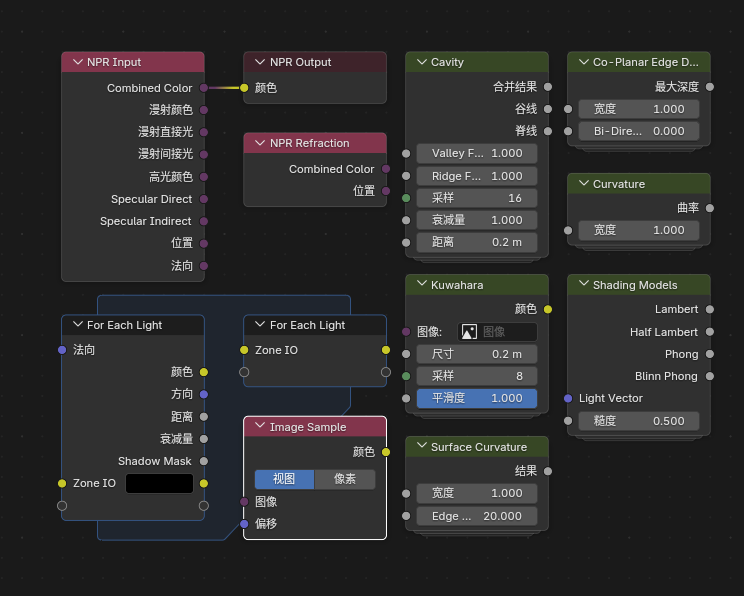
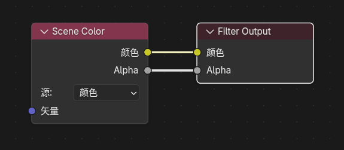

Blender 5.1 NPR Port 新增功能与使用说明¶
项目介绍¶
Blender 5.1 NPR Port 是一个NPR特化的Blender分支，在融合了 Goo Engine 和 4.4 NPR-prototype 特色节点之外还额外添加一些实用特色节点。
大部分功能是 Eevee 专用，不支持 Cycles。
文档范围¶
这份文档说明当前 Blender 5.1 NPR Port 相比官方 Blender 5.1 已经加入、并且当前分支内实际存在的 NPR / Eevee 扩展功能，以及它们的基本使用方法。
节点一览¶
着色器节点¶

NPR Tree 节点¶

部分着色器节点也可以在NPR Tree中使用滤镜节点¶

主要功能分类¶
1. Scene 级 Eevee 扩展¶
- Render Textures - 场景级额外渲染纹理系统
- Filter Materials - 全屏滤镜栈
2. Eevee 新着色器节点¶
- Render Info
- Scene Time
- Screen Derivative
- World Environment
- World To Tangent
- Bevel
3. Goo Engine 移植节点¶
- Screenspace Info
- Curvature
- Shader Info
- Light Info
4. NPR Tree 工作流与配套节点¶
- NPR Input / Output
- NPR Refraction
- Image Sample
- For Each Light
- 内置的 NPR 节点组资产包
5. 特殊功能¶
- Portal In / Portal Out（界面整理节点）
- 材质选择器预览开关
- 世界环境排除
快速导航¶
-
:fontawesome-solid-rocket:{ .lg .middle } 快速开始
从Scene级扩展开始了解基础功能
-
:fontawesome-solid-cube:{ .lg .middle } 节点详解
深入了解各个新增节点的功能
-
:fontawesome-solid-code-branch:{ .lg .middle } 工作流指南
学习 NPR Tree 的工作方式
-
:fontawesome-solid-toolbox:{ .lg .middle } 进阶配置
探索更多界面和工作流选项
版本信息¶
- Blender 版本: 5.1
- NPR Port 版本: 2026-03-27
- 文档更新: 2026-03-28
特别说明¶
重要
大部分功能是 Eevee 专用，不支持 Cycles 渲染引擎。
提示
本文档包含节点的详细参数说明和使用示例，建议按顺序阅读。